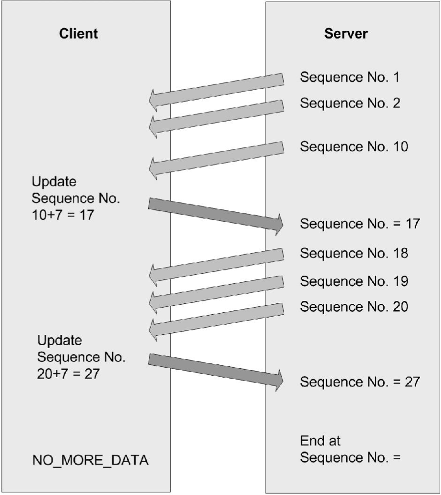

Using Example Programs
The example programs included with the Virtual Channel SDK are buildable, working virtual channels. Use these examples to:
- Verify your Virtual Channel SDK is correct by building a known working example program.
- Provide working examples of code that can be modified to suit your requirements.
- Explore the features and functionality provided in the Virtual Channel SDK.
Each of these example programs comprises a client virtual driver and a server application. The server-side application is run from the command line within an ICA session. A single virtual channel comprises an application pair.
The example programs included with the Virtual Channel SDK are:
- Ping: Records the round-trip delay time for a test packet sent over a virtual channel.
- Mix: Demonstrates a mechanism to call functions (for example, to get the time of day) on a remote client.
- Over: Simple asynchronous application that demonstrates how to code an application where the server must receive a response from the client asynchronously, and where the type of packet being sent to the client is different from the type received.
Each example includes a description of the program, packet format, and other necessary information.
Ping
Ping is a simple program that records the round-trip delay time for a test packet sent over a virtual channel. The server sends a packet to the client and the client responds with a packet containing the time it received the original packet from the server. This sequence is repeated a specified number of times, and then the program displays the round-trip time for each ping and the average round-trip delay time.
For this example, there is no significant difference between a BEGIN packet and an END packet. The two types of packets are provided as an example for writing your own virtual channel protocols.
This program demonstrates:
- How to transfer data synchronously. The sequence of events is: {SrvWrite, ClntRead, ClntWrite, SrvRead} {SrvWrite, ClntRead} {...}. The server waits for the client to reply before sending the next packet.
- How to read parameter data (in this case, the number of times to send packets to the client) from the Module.ini files.
Packet Format
The following packet is exchanged between the client and the server.
typedef struct PING {
USHORT uSign; // Signature
USHORT uType; // Type, BEGIN or END, from server
USHORT uLen; // Packet length from server
USHORT uCounter; // Sequencer
ULONG ulServerMS; // Server millisecond clock
ULONG ulClientMS; // Client millisecond clock
} PING, *PPING;
Mix
Mix demonstrates a mechanism that can be used to call functions on a remote client (for example to get the time of day). This program demonstrates an extensible scheme for making function calls from the server to the client that allows the server to specify when it expects a response from the client and when it does not. This method can increase performance, because the server does not have to constantly wait for a reply from the client.
The server calls a series of simple functions:
- Add No: Add two numbers and return the sum as the return value.
- Disp Str: Write a string to the log file. There is no return value (write-only function).
- Gettime: Read the client time and return it as the return value.
The actual implementation of these functions is on the client side. The server conditionally waits for the response from the client, depending on the function being executed. For example, the server waits for the result of the AddNo or Gettime function, but not the write- only function DispStr, which returns no result.
Packet Format
typedef struct MIXHEAD {
USHORT uType // Packet type
USHORT uFunc; // Index of Function
ULONG uLen; // Length of data
USHORT fRetReq; // True if return
ULONG dwRetVal; // Return Value from client
USHORT dwLen1; // length of data
USHORT dwLen2; // length of data
} MIXHEAD, \*PMIXHEAD;
The data consists of the above structure followed by the arguments to the function being called. uLen is the total length of the data being sent, including the arguments. DwLen1 is the length of the data pointed to by a pointer argument.
Sequence of Events
This figure illustrates the sequence of events that occurs when you use the Mix program, starting at the top.

Over
Over is a simple asynchronous application. It demonstrates how to code an application in which the server must receive a response from the client asynchronously, and the type of packet being sent to the client is different from the type received.
When the Over program begins, it:
- Spawns a thread that waits for a response from the client.
- Begins sending data packets with sequence numbers to the client.
- (After sending the last packet of data) sends a packet with a sequence number of NO_MORE_DATA, and then closes the connection.
The client receives packets and inspects the sequence number. For every sequence number divisible by 10, the client increases the sequence number by 7 and sends a response to the server. These numbers are chosen arbitrarily to demonstrate that the client can asynchronously send data to the server at any time.
The packet type used to send data from the server to the client is different from the packet type used to receive data from the client.
Packet Format - From Server to Client
typedef struct OVER {
USHORT uSign; // Signature
USHORT uType; // Type, BEGIN or END, from server
USHORT uLen; // Packet length from server
USHORT uCounter; // Sequencer
ULONG ulServerMS; // Server millisecond clock
} OVER, *POVER;
Packet Format - From Client to Server
typedef struct DRVRESP {
USHORT uType; // Type OVERFLOW_JUMP from client
USHORT uLen; // Packet length from client
USHORT uCounter; // Sequencer
} DRVRESP, *PDRVRESP;
Sequence of Events
This figure illustrates the sequence of events that occurs when you use the Over program, starting at the top.

Building Examples
Building a Server- side Example using NMAKE
-
Change to the vcsdk\src\examples\vc\server\ subdirectory.
-
At a command prompt, type
NMAKE clean all. -
To build an individual server example, run NMAKE from the example subdirectory.
Building a Server- side Example using Visual Studio or .NET
-
Create a new Win32 console project. Citrix recommends that the project name be associated with the example (for example, ctxping). You can set the location of the project to the src\examples\vc\server directory so that the .c source files are readily available.
-
Add the following directories to include the search path of the C++ preprocessor in the project settings (where vcsdk is the directory for the Virtual Channel SDK):
- vcsdk\src\examples\vc\shared\inc
- vcsdk\src\shared\inc\Citrix
-
Point to the wfapi include and library paths. Open file wfapi.mak from vcsdk installation path\src\examples\build.
- Set WFAPILIB to the full path of WFAPI lib directory.
- Set WFAPIINC to the full path of WFAPI include directory.
The WFAPI SDK installs Wfapi.lib into the designated library directory.
Building a Client- side Example for Win 32 using NMAKE
-
Browse to the Visual Studios Common tools folder and run
vsvars32.bat. -
Open user.mak in the
\src\examples\build directory. - Set the paths corresponding to your installation of Visual Studio
- Set the paths corresponding to your installation of the Windows SDK.
- Set the paths corresponding to your installation of WFAPI.
-
Open wfapi.mak in the
\src\examples\build directory. Set the paths corresponding to your installation of WFAPI. -
Change to directory
\src\examples\vc. -
For each example you want to build, type
cd client\examplenmake win32.cln
-
To build the retail modules, type
nmake win32 -
To build the debug modules, type
nmake win32.dbg
Building a Client-side Example for Win 32 using Visual Studio
-
For all platforms, the virtual channel driver DLL must export the Load function. You can do this with either a .DEF file or by specifying it as a compiler option in your Visual Studio project setting.
-
Make sure the calling convention is set to stdcall.
Preparing and Deploying a Virtual Driver
Before installing a virtual driver on a client, copy the virtual driver for the platform to the client device and configure the client MSI.
-
Copy the appropriate virtual driver for the platform to the directory on the device where the client is installed. The virtual driver is the .Dll file in
\src\examples\vc\client\driver\platform\obj\retail, where driver isvdmix,vdover, orvdping. The default installation directory is%SystemDrive%\Program Files\Citrix\ICA Client. -
Open the standard client MSI package with the Microsoft packaging tools (for example, Orca in the Windows Installer SDK).
-
Add the virtual channel .DLL to the MSI package.
-
Modify the Configuration Storage file
/configuration/module.ini.
Warning
Editing the Registry incorrectly can cause serious problems that may require you to reinstall your operating system. Citrix cannot guarantee that problems resulting from the incorrect use of Registry Editor can be solved. Use the Registry Editor at your own risk. Be sure to back up the registry before you edit it.
- Locate the VirtualDriverEx string REG_SZ value in the HKEY_LOCAL_MACHINE\SOFTWARE\Citrix\ICAClient\Engine\Configuration\Advanced\Modules\ICA3.0 key. Append the name of the virtual driver to the end of this line, for example:
VirtualDriverEx = VDPING. - Under the
HKEY_LOCAL_MACHINE\SOFTWARE\Citrix\ICAClient\Engine\Configuration\Advanced\Moduleskey, create a newkey, where ; is VDMIX, VDOVER, VDPING. For VDPING, the section would be: HKEY_LOCAL_MACHINE\SOFTWARE\Citrix\ICAClient\Engine\Configuration\Advanced\Modules\ VDPING. Add the following string REG_SZ values under the above key:
DriverName = VDPING.DLL DriverNameWin16 = VDPINGW.DLL DriverNameWin32 = VDPINGN.DLL PingCount = 3
The client engine uses DriverName, DriverNameWin16, and DriverNameWin32 to determine the module filename to load for each platform. PingCount is a tunable parameter used by the Ping virtual channel.
5. Repackage the MSI for deployment.
To deploy the MSI
Deploy your MSI package with Windows Active Directory Services or Microsoft Systems Management Server. See your Windows or Systems Management Server documentation for more information. No further configuration is necessary.
To add a virtual channel after installation
Because the Module.ini file is installed in the registry, modifying the file after installation has no effect. To add a virtual channel after installation, use the Group Policy template or change the registry keys corresponding to those in the Module.ini file at the following registry location:
HKEY_LOCAL_MACHINE\SOFTWARE\Citrix\ICAClient\Engine\Configuration\Advanced\Modules
Running an Example Virtual Channel
-
On a client configured with the client-side example, connect to a server running XenApp/XenDesktop with the associated server-side example.
-
Within the ICA session, run the server-side executable.
The server-side example queries the client-side virtual driver, and then displays the driver information. Use the -d parameter to display detailed information.
For Ping only: CTXPING sends PingCount separate pings. PingCount has a default value of three, but can be set in the [Ping] section of the Module.ini file. Each ping consists of a BEGIN packet and an END packet.
Debugging a Win32 virtual driver
Use the TRACE feature to log events on the client. To enable the TRACE statements, you must build the debug version of the virtual driver. When the debug module is installed on the client, the TRACE statements write the debug information to a file.
At run time, you can specify which class and event flags to trace. This allows you to trace only the sections you need, minimizing performance degradation.
The class flag for virtual channels is 00000080. For the complete list of class and event flags, see Logflags.h (in src\inc).
-
Compile the debug version of the virtual driver for the client platform.
-
If it is running, close the client on the client device.
-
Copy the compiled debug version of the library into the directory on the client device where the client is installed. For example, for the Ping example, copy VdpingN.dll to \Citrix\ICA Client.
-
Change to the directory containing the client and type:
wfcrun32 connection /c:xxxxxxxx /e:yyyyyyyy /logfile:filename
where: connection is the name of the connection in Remote Application Manager. xxxxxxxx are the event flags you want to log. yyyyyyyy are the class flags you want to log. filename is the relative path of the file to which you want to save the log.
The client stores the Appsrv.ini file in each user’s profile directory.
When starting the ICA session with event logging, add
/iniappsrv:%userprofile%\”application data”\icaclient\appsrv.ini to
the end of the command line above.
Deploying Client Virtual Channels Remotely
To deploy virtual channels remotely, make changes based on the following administrative template (.adm) file.
CustomVC is a placeholder for the channel name of the virtual channel.
;Group Policy template for Citrix Windows Receiver.
;Citrix Windows Receiver Client Extensions template
;Description:
;This file is provided as a base for third-party extensions
;to the Citrix Windows Receiver client.
; Copyright (C) Citrix Systems, Inc. All Rights Reserved.
;
CLASS MACHINE
CATEGORY !!Citrix
CATEGORY !!ICAClient
CATEGORY !!Third Party
#if version >= 4
EXPLAIN !!Explain_Third Party
#endif
; Remotely define virtual channel
POLICY !!Policy_CustomVirtualChannel
EXPLAIN !!Explain_CustomVirtualChannel
KEYNAME "Software\Policies\Citrix\ICA Client\Engine\Lockdown
Profiles\All Regions\Lockdown\Virtual Channels\Third
Party\CustomVC"
VALUENAME "VCEnable"
VALUEON "true,false" VALUEOFF "false" ACTIONLISTON
KEYNAME "Software\Citrix\ICA Client\Engine\Lockdown
Profiles\All Regions\Lockdown\Virtual Channels\Third
Party\CustomVC"
VALUENAME "VCEnable"
VALUE ""
KEYNAME "Software\Citrix\ICA
Client\Engine\Configuration\Advanced\Modules\ICA 3.0"
VALUENAME "VirtualDriverEx"
VALUE "CustomVC"
KEYNAME "Software\Citrix\ICA Client\Engine\Configuration\Advanced\Modules\CustomVC"
VALUENAME "DriverName"
VALUE "Unsupported"
KEYNAME "Software\Citrix\ICA
Client\Engine\Configuration\Advanced\Modules\CustomVC"
VALUENAME "DriverNameWin16"
VALUE "Unsupported"
KEYNAME "Software\Citrix\ICA
Client\Engine\Configuration\Advanced\Modules\CustomVC"
VALUENAME "DriverNameWin32"
VALUE "VDCustomVC.DLL"
END ACTIONLISTON
ACTIONLISTOFF
KEYNAME "Software\Citrix\ICA
Client\Engine\Configuration\Advanced\Modules\ICA 3.0"
VALUENAME "VirtualDriverEx"
VALUE ""
END ACTIONLISTOFF
END POLICY
END CATEGORY
END CATEGORY
END CATEGORY
[strings]
Citrix="Citrix Components"
ICAClient="Presentation Server Client"
Third Party="Extensions"
Explain_Third Party="These policies control extensions to the standard Citrix Presentation Server Client."
Policy_CustomVirtualChannel="Additional Virtual Channel"
Explain_CustomVirtualChannel=" This policy controls a virtual
channel.\n\nSupplier:\nMy
company.\n\nReference:"
Administrative Template Changes for Ping Example
For the ping virtual channel example, edit the .adm template file as follows (changes in the text are in boldface).
Note
The Memory INI functions require the lines in the example referencing VCEnable. Every parameter used by the virtual channel must appear in this file. The client uses these to place security restrictions on the virtual channels.
;
; Group policy template for Citrix Windows Recevier Client
; Ping virtual channel example template
; Description;
; A Group Policy template to remotely configure the Ping Virtual Channel
CLASS MACHINE
CATEGORY !! Citrix
CATEGORY !! ICAClient
CATEGORY !!Third Party
#if version >=4
EXPLAIN !!Explain_Thrid Party
#endif
;
; Remotely configure the Ping Virtual Channel
;
POLICY !!Policy_PingVirtualChannel
EXPLAIN !!Explain_PingVirtualChannel
KEYNAME "Software\Policies\Citrix\ICA Client\Engine\Lockdown
Profiles\All Regions\Lockdown\Virtual Channels\Third Party\ping"
VALUENAME "VCEnable"
VALUEON"true,false"
VALUEOFF"false"
ACTIONLISTON
KEYNAME"Software\Citrix\ICA Client\Engine\Lockdown\
Profiles\All Regions\Lockdown\Virtual Channels\Third
Party\ping"
VALUENAME "VCEnable"
VALUE ""
KEYNAME"Software\Citrix\ICA Client\Engine\Configuration\Advanced\Module\ICA 3.0"
VALUENAME "VirtualDriverEx"
VALUE "ping"
KEYNAME"Software\Citrix\ICA Client\Engine\Configuration\Advanced\Modules\ping"
VALUENAME "DriverName"
VALUE "Unsupported"
KEYNAME "Software\Citrix\ICA Client\Engine\Configuration\ Advanced\Modules\ping"
VALUENAME "DriverNameWin16"
VALUE "Unsupported"
KEYNAME "Software\Citrix\ICA Client\ Engine\Configuration\Advanced\Modules\ping"
VALUENAME "DriverNameWin32"
VALUE "vdpingn.dll"
END ACTIONLISTON
ACTIONLISTOFF
KEYNAME "Software\Citrix\ICA Client\Engine\ Configuration\Advanced\Modules\ICA3.0"
VALUENAME "VirtualDriverEx"
VALUE ""
END ACTIONLISTOFF
END POLICY
END CATEGORY
END CATEGORY
END CATEGORY
[strings]
Citrix="Citrix Components"
ICAClient="Presentation Server Client"
Third Party="Extensions"
Explain_Third Party="These policies control extensions to the standard Citrix Presentation Server Client." Policy_PingVirtualChannel="Example Ping Virtual Channel"
Explain_PingVirtualChannel=" This policy controls the example Ping virtual channel.\n\nSupplier:\n My company.\n \nReference:Example001"
Best Practices
Citrix recommends using the .adm file to customize the following parts of the Group
Policy GUI:
- Specify a name (Additional Virtual Channel in the template file) that describes the functionality provided by the virtual channel.
- Description text
- Supplier
- Reference (for example, add a URL or email address to access further information).
- GUI that appears when the policy is double-clicked (optionally and as required).
Do not change the name of the Citrix Components\Presentation Server Client\Extensions folder.
Deploy the virtual channel DLL remotely using existing management tools and enable and configure using the above GUI. You can do this to entire groups of computers within an organization.